Automatización
Python, VBA, flujos secuenciales, controles y reducción de tareas repetitivas.
PORTAFOLIO PROFESIONAL
Automatización de procesos, desarrollo de sistemas y gestión de datos.
Diseño soluciones que convierten tareas manuales y procesos dispersos en operaciones controladas, trazables y preparadas para crecer.
PERFIL PROFESIONAL
Soy Analista Programador de Sistemas y Administrador Financiero. Mi experiencia reúne procesamiento de datos, desarrollo de sistemas, automatización, control de gestión y liderazgo de operaciones.
He trabajado en banca, investigación de mercados, auditoría y gestión regional de datos. Esa combinación me permite comprender tanto la necesidad técnica como el efecto que una solución debe producir en el trabajo diario.
Mi aportación no se limita a generar informes. Construyo herramientas para capturar, validar, transformar y utilizar información de forma consistente.
Python, VBA, flujos secuenciales, controles y reducción de tareas repetitivas.
SQL, SPSS, Excel avanzado, Power BI, KPI, validación y calidad.
Interfaces, bases de datos, reglas de negocio, integraciones y trazabilidad.
Estandarización, seguimiento operativo, coordinación regional y mejora continua.
CASOS DE ESTUDIO
Los casos siguientes explican la necesidad, el trabajo realizado, el funcionamiento de la solución y el resultado. Las capturas se utilizan como evidencia, no como sustituto de la explicación.
AUTOMATIZACIÓN FINANCIERA
Automatización de un proceso financiero compuesto por varias tareas dependientes entre sí, que debía terminar con información actualizada y disponible para análisis.
El proceso requería revisar documentación vencida, actualizar tasas y archivos, consolidar información, tratar documentos FWD y generar tablas MTM. La secuencia ocupaba entre cuatro y cinco horas y exigía controlar manualmente cada etapa.
Antes de automatizar, el trabajo se dividió en operaciones independientes, con entradas, salidas y confirmaciones claras. Esto permitió ordenar el flujo y evitar que una etapa se ejecutara sin haber completado la anterior.
Desarrollé un sistema en Excel/VBA con una interfaz central. Desde ella se ejecutan las actualizaciones, consolidaciones y controles. Cada operación informa su resultado y deja evidencia de la ejecución.
El usuario puede completar el ciclo desde un único punto, disminuir manipulaciones manuales y obtener tablas MTM actualizadas y listas para análisis.
EVIDENCIAS PRINCIPALES
Se seleccionaron cuatro capturas representativas del flujo completo.
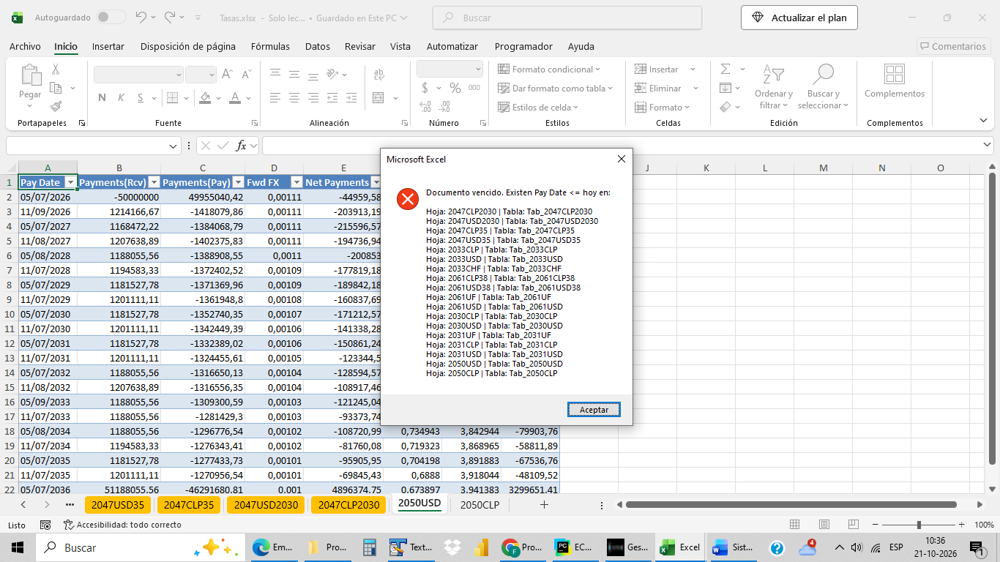
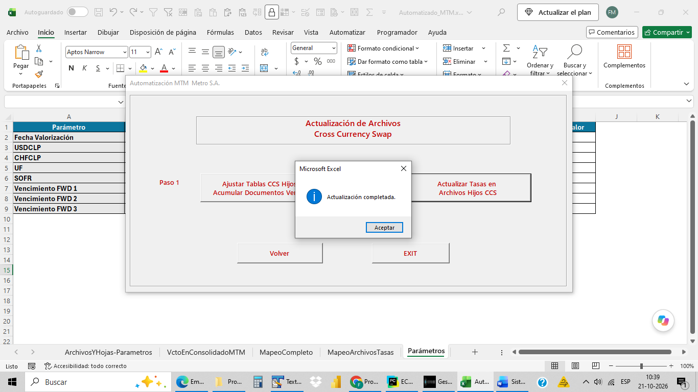

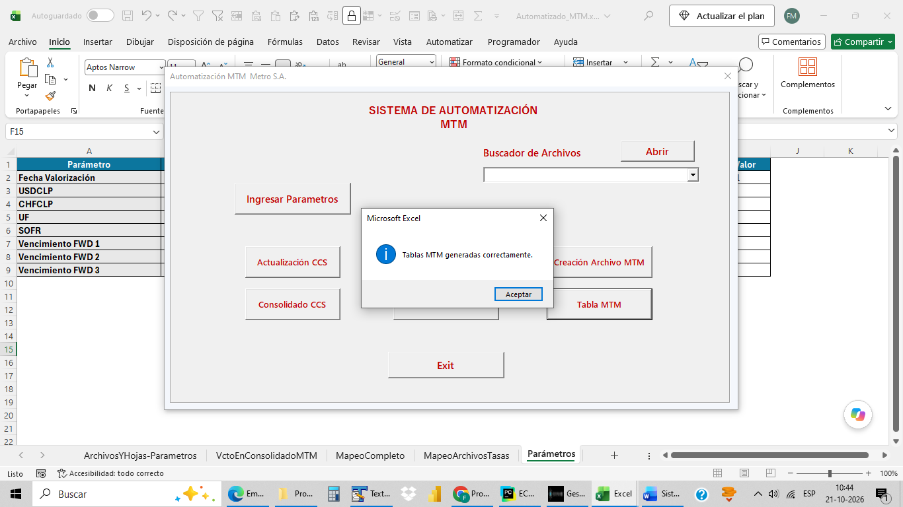
RESULTADO
El ciclo pasó de cuatro o cinco horas a aproximadamente cinco minutos. El valor no está solo en la rapidez: el proceso quedó ordenado, con etapas visibles, resultados confirmados y una salida preparada para análisis.
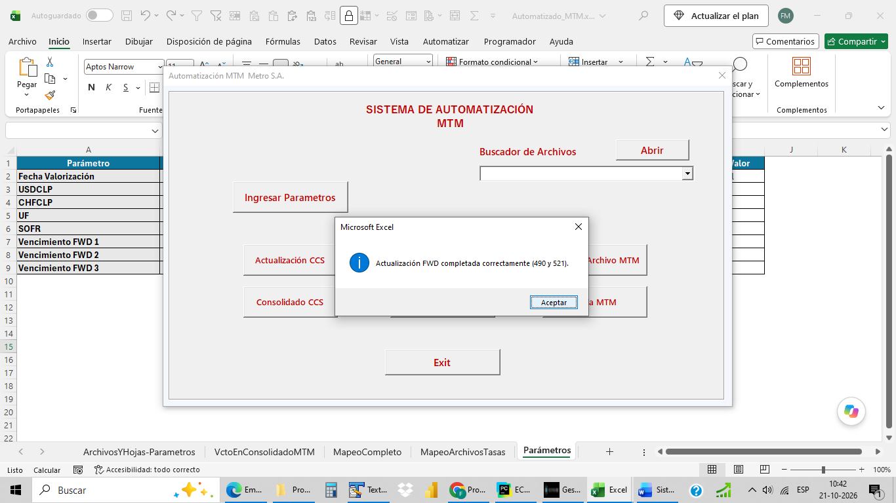
E-COMMERCE Y AUTOMATIZACIÓN DE DATOS
Sistema desarrollado para construir y mantener la Base Madre de productos de una tienda Shopify enlazada con CJDropshipping y DSers.
Revisar manualmente catálogos externos obliga a recorrer grandes cantidades de productos, comprobar stock, costes de envío, variantes y datos incompletos. Además, el catálogo debe crecer sin duplicar registros ni perder la continuidad de la base existente.
El problema se separó en dos decisiones. Primero, determinar si un producto es operativamente viable mediante filtros de Gestión. Después, evaluar su conveniencia comercial mediante filtros internos de Marketing y Publicidad.
Diseñé un Panel de Gestión de Productos conectado con la Base Madre. El panel permite definir el objetivo total, configurar stock mínimo, limitar el coste de envío y establecer el alcance de búsqueda antes de iniciar una carga acumulativa.
La herramienta centraliza una operación técnica y la convierte en un proceso controlable. El usuario sabe desde cuántos productos comienza, cuántos faltan, qué parámetros se aplicarán y cuál fue el resultado de la ejecución.
MI PARTICIPACIÓN
EVIDENCIAS PRINCIPALES
Las capturas muestran el control previo, las validaciones, la ejecución y el cierre.
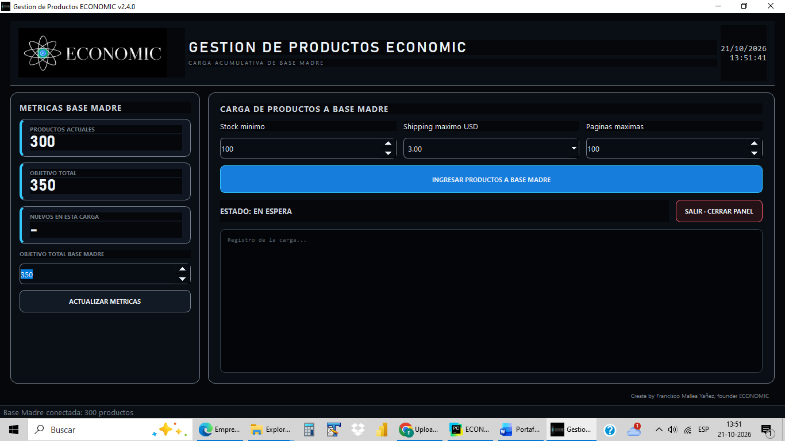
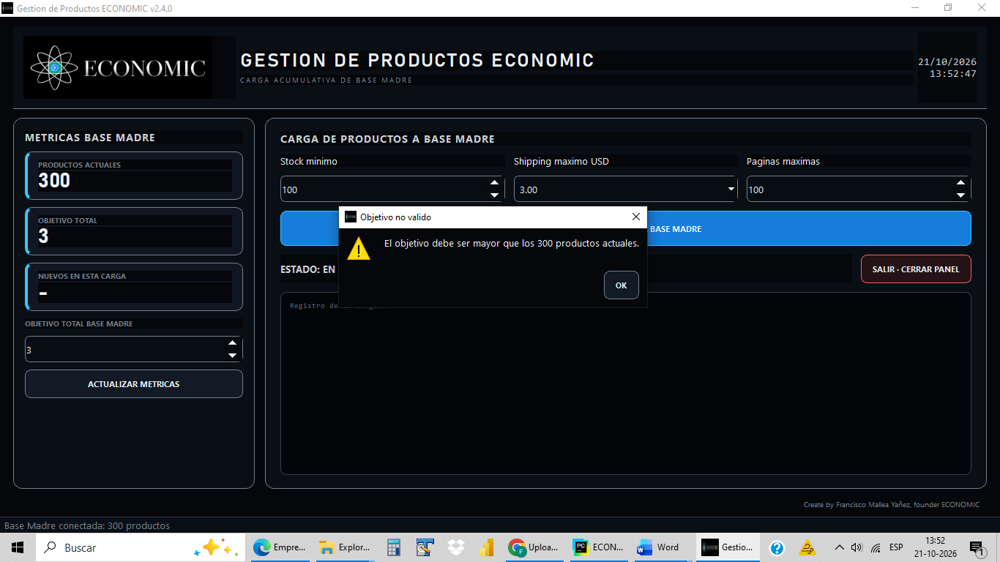
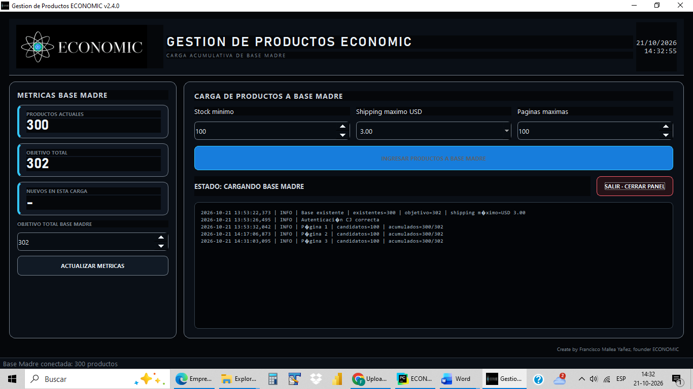
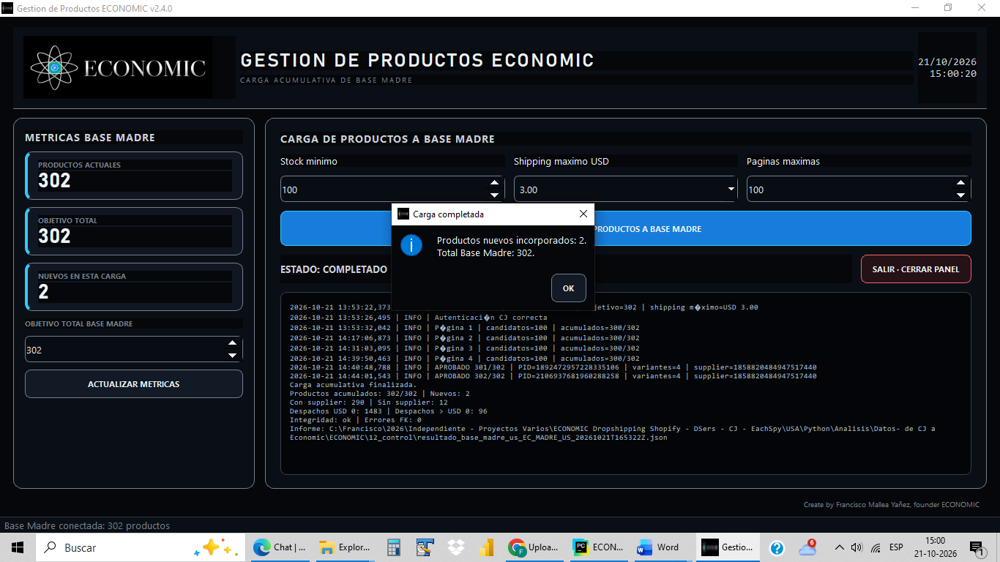
RESULTADO
La primera ejecución documentada amplió la Base Madre desde 250 hasta 300 productos, con 50 incorporaciones, integridad OK y cero errores. La ejecución complementaria validó la continuidad acumulativa desde 300 hasta 302 productos.
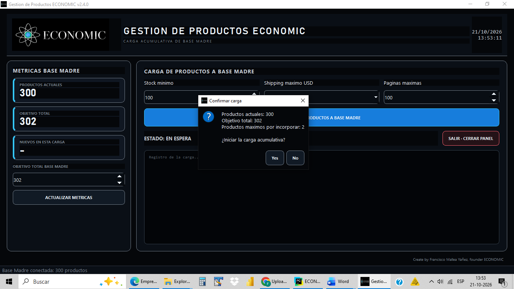
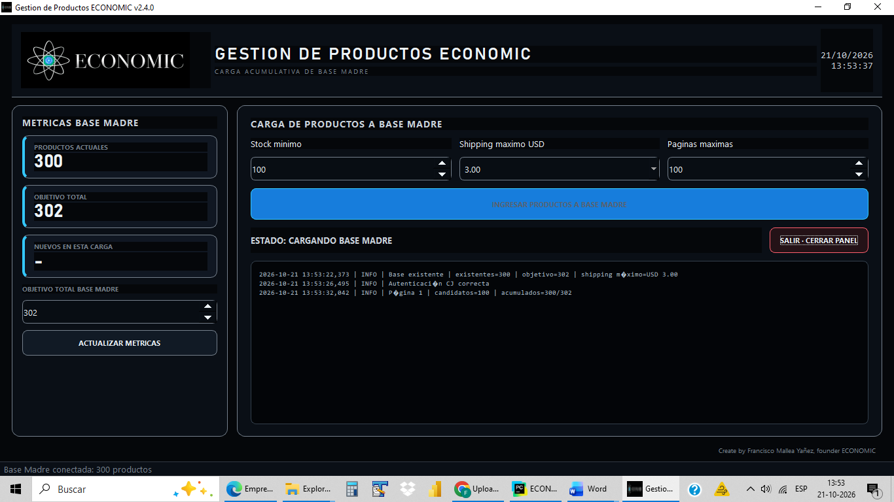
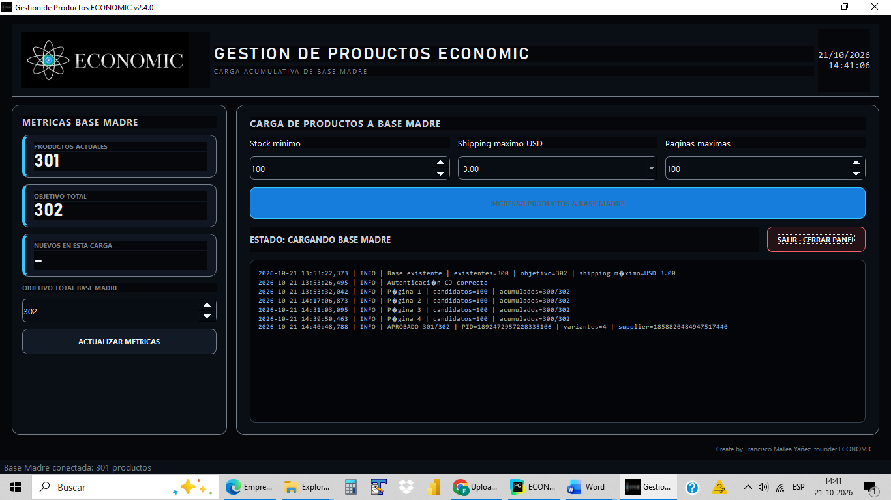
TRAYECTORIA
La automatización se apoya en una trayectoria extensa trabajando con datos, controles y operaciones reales.
Desarrollo de sistemas, automatización, análisis de datos, KPI y soluciones financieras.
Gestión regional, coordinación técnica, KPI, calidad y entregas para operaciones en México, Colombia, Brasil, Perú y Argentina.
Administración de plataformas de datos, procesamiento en SPSS e informes analíticos.
Procesamiento y análisis de datos con manejo avanzado de Excel.
Programación RPG, sistemas de custodia y soporte operativo.
PROPUESTA DE VALOR
Comprendo el problema y los datos antes de construir.
Diseño una solución reproducible, no un parche aislado.
Incorporo validaciones, trazabilidad y resultados revisables.